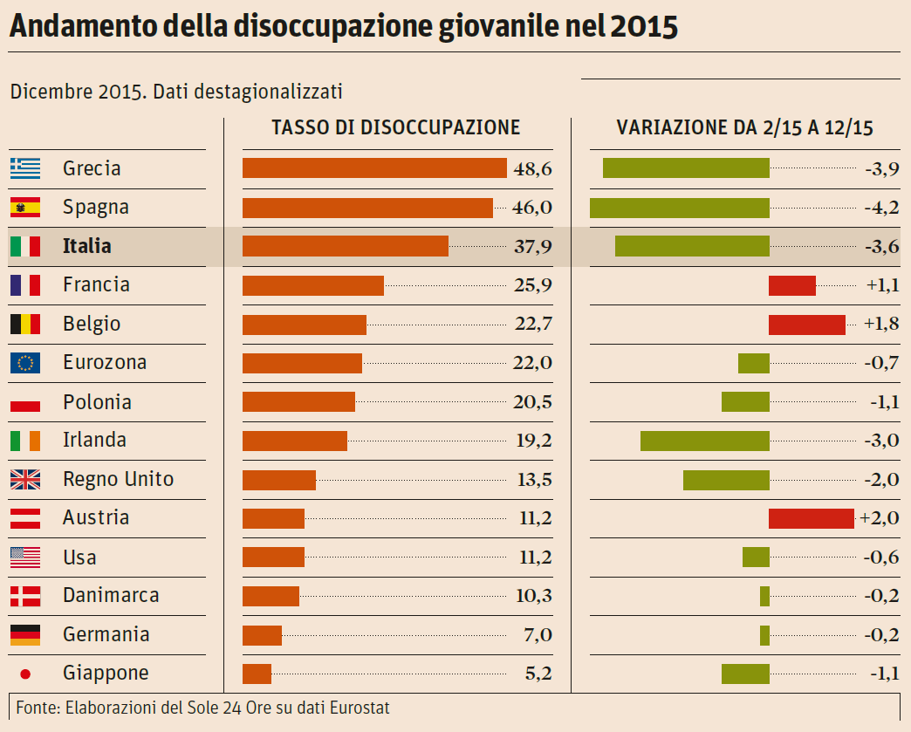

Tommaso Montali, Matteo Ghillani, Klindi Zylifi, Antonio Tamburo, Megan Medhiu e Sofia Maslienikova
Il tasso di disoccupazione giovanile in Italia è aumentato al 19% a Marzo rispetto al 17,3% di Febbraio 2025. L’Italia continua a essere tra i peggiori in Europa per quanto riguarda l'occupazione lavorativa.
550 mila giovani hanno lasciato l’Italia negli ultimi 13 anni, dal 2011 al 2023, per emigrare all’estero. Al netto di quanti sono rientrati, siamo a quota 377 mila.
ha raggiunto il 61,5%, il valore più alto mai registrato.
Le regioni con un tasso di occupazione superiore al 70% nella fascia di età tra i 15 e i 64 anni sono:
Mentre Sicilia, Calabria e Campania sono le uniche sotto il 50%.
I lavoratori sono suddivisi in 5 settori:
Nel 2023 il tasso di disoccupazione in Italia ha raggiunto il 7,7%. Queste sono persone che non lavorano e che cercano attivamente una nuova occupazione.
Napoli è l’unica provincia dove il tasso di disoccupazione supera il 20%, anche se Messina è molto vicina con il 19,3%.
In generale, nessuna regione del Nord ha un tasso di disoccupazione superiore al 7%, mentre in cinque regioni meridionali si supera il 10%.
Nel 2023 il 33,3% della popolazione tra i 15 e i 64 anni era inattiva: non ha lavorato o non ha cercato un lavoro.
Crediti: Pagella Politica
In molti settori oggi esistono forme di lavoro in cui i diritti fondamentali non vengono rispettati.
Tra queste spiccano due realtà emblematiche: i rider della “gig economy” e i lavoratori in nero.
Entrambi operano in condizioni di precarietà, con salari bassi, assenza di tutele e insicurezza costante.
I rider, pur essendo formalmente autonomi, lavorano nei fatti come dipendenti, ma senza ferie, malattia o contributi adeguati.
Vengono pagati a consegna, non a ora, e sono costretti a lavorare in ogni condizione, sotto forti pressioni.
A tutto questo si aggiunge la difficoltà di far valere i propri diritti contro piattaforme digitali potenti e poco trasparenti.
Il lavoro in nero, ancora molto diffuso soprattutto in agricoltura, edilizia, ristorazione e servizi domestici, è ancora più grave: niente contratto, nessuna copertura, zero contributi.
Chi lavora in nero non ha garanzie, è facilmente ricattabile e rischia di restare invisibile per tutta la vita lavorativa.
In entrambi i casi, il risultato è lo stesso: lavoratori sfruttati, privi di tutele e senza prospettive. Serve più consapevolezza, leggi più giuste e controlli reali per restituire dignità al lavoro e garantire equità a tutti.

In Italia, un problema ancora attuale è il tema della sicurezza sul lavoro. La Costituzione dice che la sicurezza sul lavoro è un diritto fondamentale, ma in Italia non è sempre così.
Com’è cambiato il numero dei morti sul lavoro in settant’anni?
Nel 2022 , le morti sul lavoro sono diminuite rispetto agli anni passati:
9,3% in meno rispetto agli ultimi 10 anni.
10,9% in meno rispetto al decennio precedente.
30,7% in meno rispetto a 30 anni fa.
Un bel miglioramento, anche se c’è sempre da fare per la sicurezza sul lavoro!
Ci sono stati, infatti, espisodi di morte recenti di lavoratori sul luogo di lavoro, si tratta di due gravi incidenti che hanno riacceso il dibattito sulla sicurezza.
16 febbraio 2024: crolla una trave in un cantiere a Firenze, muoiono 5 operai.
9 aprile 2024: esplosione nella centrale idroelettrica di Bargi, 7 vittime.
Sono eventi tragici che non devono più accadere e che ricordano l’importanza di migliorare la sicurezza sul lavoro.


Un lavoro sottopagato o Low-Wage Earner sono circa 1.255.000 e quadagnano in media meno di €8,9 l'ora
Da articolo 36 la paga del lavoratore deve essere proporzionata all'lavoro
| Sottopagati | Ben pagati |
|---|---|
| Addetto alle Pulizie | Operatore su piattaforme petrolifere |
| Cameriere/Barista | Tecnico Specializzato |
| Magazziniere | Macchinista Ferroviario |
| Cassiere | Autista di mezzi pesanti |
| Operaio Edile | Pilota di aerei |
| Rider | Ingegnere |
| Operatore di Call Center | Medico |